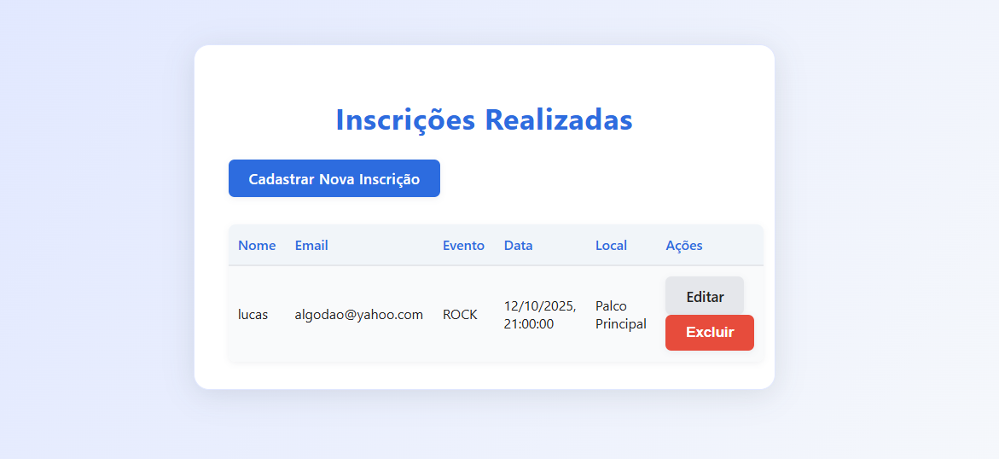

Web Application Document (WAD)
Introdução
Este sistema é uma plataforma para criação e inscrição em eventos, com autenticação de usuários.
Arquitetura MVC
O sistema segue o padrão arquitetural Model-View-Controller (MVC), proporcionando uma separação clara de responsabilidades e facilitando a manutenção e escalabilidade da aplicação.

Fluxo de Dados
- Cliente → Servidor: O usuário faz requisições HTTP através do browser
- Routes → Controllers: O sistema de roteamento direciona as requisições para os controllers apropriados
- Controllers → Models: Os controllers executam a lógica de negócio e chamam os models
- Models → Banco de Dados: Os models executam queries SQL no PostgreSQL
- Resposta: Os dados retornam como JSON response ao cliente
Interface
Página Principal / Formulário
Tela de início do sistema com formulário completo para cadastrar uma nova inscrição no sistema. Os campos obrigatórios incluem: Nome do Usuário, Email, Senha e Tipo de Evento. Abaixo do formulário, há dois botões: Cadastrar, que envia os dados, e Voltar, que retorna para a tela de listagem.

Formulário
Formulário parcial de nova inscrição, onde o usuário deve preencher o nome, email e escolher o tipo de evento em uma lista suspensa. A lista inclui opções como ROCK, SAMBA, FUNK, etc. Esta interface antecipa a seleção antes da submissão completa do cadastro.

Tela de listagem de inscrições
Página principal que exibe todas as inscrições já realizadas. Contém uma tabela com as colunas: Nome, Email, Evento, Data, Local e Ações. Cada linha da tabela apresenta os dados de um inscrito e permite editar ou excluir a inscrição. Também possui um botão destacado para "Cadastrar Nova Inscrição", redirecionando para o formulário de cadastro.
Diagrama do Banco de Dados

Tecnologias Utilizadas
- Backend: Node.js + Express.js
- Banco de Dados: PostgreSQL (Supabase)
- Padrão Arquitetural: MVC (Model-View-Controller)
- Outras dependências: pg, dotenv, cors